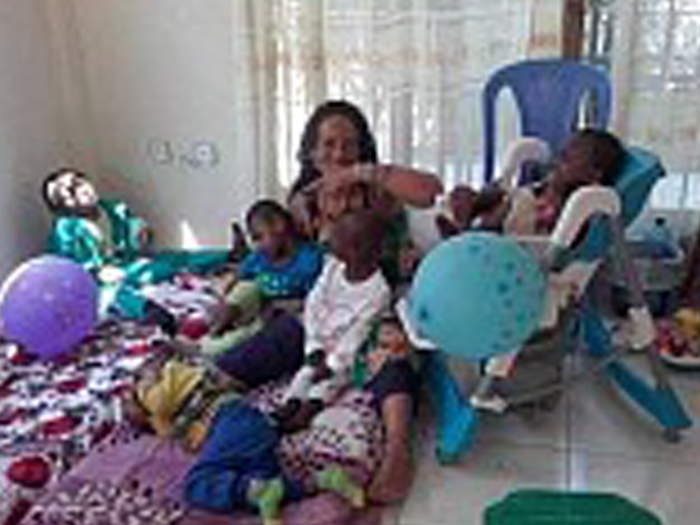

Blessed greetings,
My name is Barbara Okugbeni, but I use my Nigerian name of Mena and that is how I am known here in Bahir Dar. I am originally from London, UK where my son, my granddaughter and the rest of my family still live. I was trained in Social Work, did my degree in Social Policy and began my career as a probation officer. After 10 years I realised that this was not the field for me and began working with disabled children. Initially at the weekend but as I got hooked I gave up my P.O. job and began to work full time with these amazing little people.

The first day I opened as an unofficial day care
It was a drastic drop in wages but I gained so much in job satisfaction that I knew this was where I belonged. I first came to Bahir Dar in January 2013 with the aim of volunteering with a project that I had been raising money for. The founder of that organisation led me to believe that he was running a project for disabled children. He took me to a local school and introduced me to the director of that school which had one of the only classrooms for disabled children , at that time, in Bahir Dar. They spoke in Amharic which I did not understand and so I accepted what I was being told at that time, that he started and funded this special classroom. It later came to light that this was untrue but by that time I had met and fallen in love with several disabled children and so made the promise to their families that I would return and help them in whatever way I could. I returned to UK and thankfully my son was very supportive of my leaving to live in Ethiopia even though he had just found out that he was to be a father. This made my decision very difficult. I had been longing to be a grandmother and wanted to be an integral part of my grandchild's life, I was so torn. I meditated on it for days , not sure of what to do, when I got on a bus in London and my decision was made for me. I went upstairs on the bus only to find it completely empty so I could sit anywhere I wanted. I chose a seat half way down the bus near a window so that I could get some fresh air and think. As I went to sit down I noticed an Ethiopian prayer card on the seat. It was in Amharic so I had no idea what it said but it had a beautiful picture of a saint on it with an Amharic prayer on the back. I took this to mean that I should go to Ethiopia, my decision was made.
Many of the mothers I had met during my first 3 months in Ethiopia were single mothers as the fathers had abandoned them because of the stigma of having a disabled child. This left the mothers unable to work and earn money so many had been reduced to begging with their child. I was taken to meet several children who were hidden away from their community by their families too scared of the reaction of their wider community should they find out they had a disabled child. At first this made me very angry but in time I came to understand their situation and tried not to judge them too harshly for it, after all it wasn't that long ago that similar practices took place in western societies. I was met with statements explaining that the bible says that the sins of the parents would be visited upon the child and these mothers did not want to be seen as sinners within their communities. This pressure caused them to keep their children in situations bordering on abuse. I knew I had to do something to help these children.
So after settling my affairs in London I returned to Bahir Dar and rented a small house. I took in several children from families too poor to care for them and began to send them to school. I also began to unofficially care for 6 disabled children whilst their mothers worked. At that time I had no staff, only a young girl Maste who helped me with cooking Ethiopian food and her friend Anguach who helped me clean the house and wash clothes.
In the beginning the mothers would bring the children to my home and pick them up after they had finished work. I would give the children breakfast, shower them and give them a full-body therapeutic massage. Most days this would take me up to lunch time. After lunch the children would rest while I ate my lunch and then after lunch we would play games or do physiotherapy exercises.
I used to fund the project with my own money. I would return to uk for 6 months and work. I would then go back to Bahir Dar and use the money I had earned to rent the house and run the project. This situation wasn't ideal as it meant that any progress I made with the children working with them for 6 months was generally undone during the 6 months I was working in UK. Proper funding was a must if the project was to have a realistic lifespan. Proper funding would mean that I could employ staff, hire bajaj's to escort the children to and from the project and that I wouldn't need to spend 6 months in uk working, I could dedicate my life to building the project and changing the lives of these beautiful children....